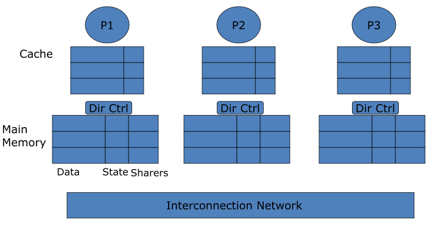
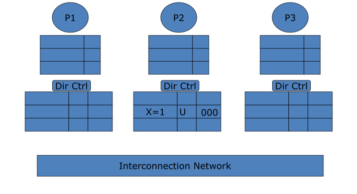
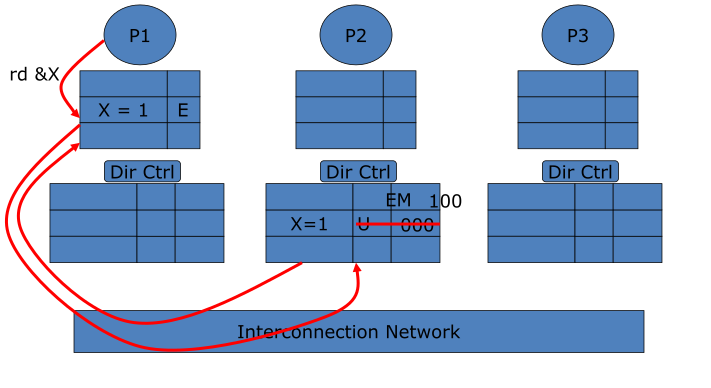
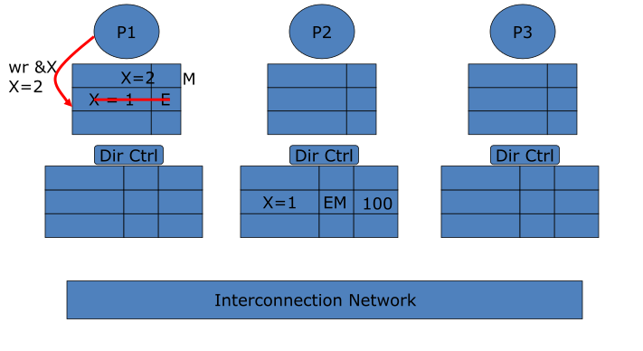
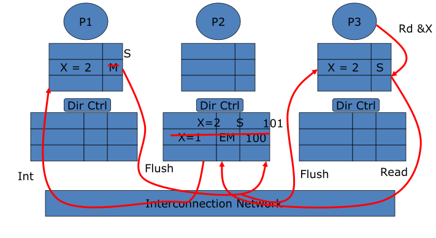
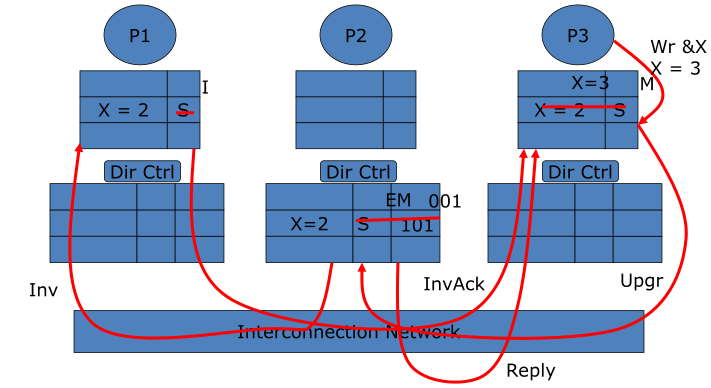
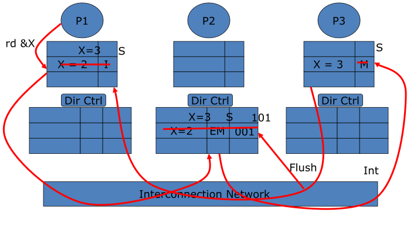
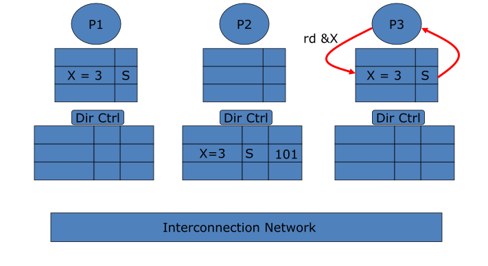

Module 10.1Basic Directory Protocol Why broadcast doesn't scale, the home / directory idea, read & write handling, and directory storage formats (full vector, coarse, limited pointers, sparse).
Module 10.2Handling Protocol Races What breaks when the directory is out of sync and messages are non-atomic — transient states, NACKs, home-centric vs. requestor-assisted.
Module 10.3Cache-Based Directory The SCI linked-list scheme: tiny storage, but longer write latency and trickier races.
The takeaway
A directory filters coherence traffic so only the caches that actually share a block get involved. That filtering is what lets shared memory scale to tens–hundreds of processors — but it costs storage, extra hops, and a much more complex protocol.
Module 10.1
Basic Directory Protocol
Objective
Understand how basic directory-based protocol works
Outline:
How to scale coherence protocols
Basic directory coherence protocol design
Issues: handling read/write, directory location, directory info, sharing information format (full bit, coarse vector, limited pointers, sparse directory)
Working example
Why Bus-Based Coherence Doesn't Scale
A shared bus with snooping is great for small multiprocessors — but it hits two kinds of limits.
Physical constraints
Long shared wires force a low clock frequency; bus arbitration delay grows with the number of clients.
Protocol constraints
Snoop/broadcast saturates bandwidth quickly — every request is seen by every cache. Contention everywhere: bus, snoopers, memory.
How do we scale to a larger MP?
Ways to Scale Bus-Based MP
Interconnection
Bus
Point-to-point
Protocol
Snoopy
Least scalable
More scalable
Directory
Most scalable
Approach 1: replace bus with point-to-point interconnection, but keep relying on snooping/broadcast
e.g., AMD Opteron (mesh), IBM Cell (ring), Intel Larrabee (ring)
Still cannot scale to hundreds of processors
Approach 2: replace broadcast with directory protocol
e.g. SGI Altix system
Leads to distributed shared memory (DSM) multiprocessors
Scaling to tens to hundreds of processors
How to Map Memory on DSM?
Block interleaving?
distributes data around
Hard to exploit locality
No interleaving?
OS must be involved in deciding where to allocate a page
with significant impact on performance
First touch vs. round robin
Finding a Block: Home & Directory
Home
Each block maps to a single memory — its home. The home is the authoritative tracker for that block.
Directory
At the home, a structure records which caches may have a copy of the block and in what state.
Where is the directory stored?
Entirely in memory, or split memory + cache
Centralized (one table) vs. distributed (each node holds the directory for its own home blocks)
Directory Handling of a Load (Read)
Three hops1. P0 misses, sends Read to the home. 2. Home looks up the directory, finds owner P3, sends an intervention. 3. Owner P3 flushes the block to P0 (and may update home).
Directory Handling of a Store (Write)
Targeted invalidation1. P0 sends Write/Upgrade to home. 2. Home knows P1, P2 are sharers and sends invalidations only to them. 3. Sharers reply with InvAck to the requestor.
Directory Location Choices
The directory can live at different points in the hierarchy — the principle (track sharers at the home) is the same.
Classic DSM
Directory sits beside main memory at each node; nodes joined by an interconnect. Each node = P + L1/L2 + its local memory + its directory.
Directory-coherent LLCs
On one multicore chip, the directory sits at each memory controller and tracks the cores' private last-level caches (L2).
Directory-coherent non-LLCs (L2)
The directory sits with the shared L3 slices and tracks the private L2 caches above them.
What Information Does the Directory Keep?
At minimum the directory must record, per block:
Which caches are sharers / the owner
Which state the block is cached in
Ideally it would mirror the caches' full MESI state — but it can't.
The E→M problem
A cache's transition from Exclusive → Modified is silent (no message). So the directory cannot tell E from M.
So the directory keeps 3 states
Dir state
Meaning
EM
block cached in Exclusive or Modified by one owner
S
block cached cleanly (Shared) by one or more
U
Uncached (or only in Invalid)
Caches still run full MESI; the directory collapses E and M into a single EM state.
Performance Criteria for a Directory Design
Main criteria
Traffic on invalidations
Latency of invalidations
Storage overhead of the directory
Less important
Traffic on interventions
Latency of interventions
Why invalidations dominate
An invalidation may involve many sharers, while an intervention involves a single owner. So the cost and scalability of the design is driven by invalidation behavior.
A Worked Protocol: Setup
Cache statesFull MESI in each cache.
Directory formatFull bit-vector — one presence bit per node, plus a state field.
Directory statesEM (Exclusive or Modified) · S (Shared) · U (Unowned).
Full Bit-Vector: Coherence Messages
Issued by requestor
Read — read request
ReadX — read-exclusive (write) request
Upgr — upgrade (already shared → write)
Issued by home
ReplyD — reply with data
Reply — reply without data
Inv — ask sharer to invalidate
Int — ask owner to flush & go to S
Issued by owner / sharer
Flush — owner sends data to home + requestor
InvAck — ack of an Inv
Ack — ack of a non-inval msg
Note the varietyFar more message types than a snoopy protocol — that richness is what enables point-to-point, traffic-filtered coherence.
State Transition at the Directory
Legend
Each arc is labeled <request>/<reply1>,<reply2>.
U→EM: first Read/ReadX, home replies with data.
EM→S: a Read from a third party → home intervenes the owner.
S→EM: an Upgr/ReadX → home invalidates other sharers.
Self-loops keep the same state (e.g. another Read while Shared).
Full-bit Vector Protocol Visualization








Full Bit-Vector Walkthrough — Trace
Directory entry shown as state, presence-bits(P1 P2 P3). X is homed at P2.
Coarse vector
One bit represents a group of g nodes. Invalidation goes to all nodes in any group whose bit is set.
\( O(p^2/g) \)
256 procs, 4/cluster, 128B line → 6.25% overhead
Limited pointers
Keep only a few pointers to sharers (each \(\log_2 p\) bits).
\( O(\text{numptr} \cdot \log_2 p \cdot p) \)
Most blocks have few sharers, so ~5 pointers usually suffice. p=1024 → 10-bit pointers.
Also simpleLarger cache lines amortize the per-line directory cost (fewer lines). But limited pointers raise a question: what happens on overflow — more sharers than pointers?
Overflow Schemes for Limited Pointers
Broadcast
Set an overflow bit; once set, fall back to broadcasting invalidations to all nodes.
No-broadcast (invalidate to fit)
Cap sharers at the pointer count: to admit a new sharer, invalidate one existing sharer first.
Coarse vector
On overflow, reinterpret the pointer bits as a coarse vector; invalidation goes to all nodes a bit covers.
Trade-off
Each scheme trades storage against extra invalidation traffic in the (rare) widely-shared case.
Sparse (Cached) Directories
Observation
Total cache entries ≪ total memory blocks → most directory entries are in state U (uncached). Storing them all is wasteful.
Idea
Keep directory entries only for non-U blocks, organized as a cache. Allocate an entry when a block becomes cached.
It can overflow
Caches replace blocks silently — the directory never sees the eviction, so it can't free the entry. The directory-cache fills up.
Handling overflow (simple)
When an entry must be evicted, send invalidations to all its sharers, then reuse the slot.
Mixing Formats: SGI Origin 2000
A real machine uses several formats at once (2 processors per node, sharing a "Hub").
Exclusively cached: the entry is a single pointer to that processor.
Shared: a bit vector of node ids (not processor ids). An Inv to a Hub is broadcast to both processors in that node.
Two sizes: 16-bit (32 procs, in DRAM) and 64-bit (128 procs, extra bits in extension memory).
Larger machines: coarse vector, each bit = p/64 nodes; the machine chooses bit-vector vs. coarse-vector dynamically.
TakeawayProduction DSMs don't pick one format — they adapt the directory representation to the sharing pattern and the machine size.
Origin 2000 specifics (16-/64-bit directory, coarse vector): Laudon & Lenoski, "The SGI Origin: A ccNUMA Highly Scalable Server," ISCA 1997.
Module 10.1 — Review
1. How does a directory protocol scale better than broadcast/snoopy?
The directory filters traffic: only the owner/sharer caches are contacted for a transaction. In broadcast, every cache controller participates.
2. Why can't the directory distinguish Exclusive from Modified?
The cache's E→M transition is silent (no message). Without changing MESI, the directory can't tell them apart, so it keeps a single EM state.
3. Why is directory storage a scalability problem, and what mitigates it?
Possible sharers grow with the number of caches → per-line bits grow → O(p²). Mitigations: coarse vector, limited pointers, sparse directory (the last two need an overflow policy).
Module 10.2
Handling Protocol Races
Objective
Understand several protocol races and how to mitigate them
Outline:
Races due to out of sync directory
Races due to non-atomic message delivery
Write propagation and serialization
Home-centric and requestor-assisted
The Assumptions We've Been Making
Assumption 1
The directory state always reflects the most up-to-date state of the caches.
Assumption 2
The messages for a request are processed atomically (instantaneously, indivisibly).
Reality
In a real machine, one or both can be violated → protocol races. Some races are easy to handle; others are subtle.
Goal of this module
Illustrate approaches for dealing with races — not to enumerate every possible race. We focus on the techniques, not exhaustive coverage.
Races from an Out-of-Sync Directory
The directory's view can lag the caches because of silent replacements and in-flight writebacks.
Easy cases
Inv to a node that silently replaced the block → it can still reply InvAck.
Read from a node the home already thinks is a sharer → just reply with data (ReplyD).
Hard case
Read/ReadX arrives for a block the home thinks is in EM @ that owner, but:
If clean — it was replaced silently (gone).
If dirty — its Flush hasn't arrived yet.
Wait? It may never come. Reply with data? It may be stale.
Fixing Out-of-Sync Races: Enlist the Nodes
The home alone can't solve it
Individual nodes must participate in resolving the ambiguity.
Each node keeps an outstanding-transaction buffer for any Flush it has issued.
Require the home to acknowledge receipt of a Flush.
Delay any Read/ReadX to a block that is still being written back.
Result
The home only ever sees a Read/ReadX for a block that is not mid-writeback — so it can safely send ReplyD.
Protocol change
Split EM into two states — EMA and EMB (the directory thinks the owner is node A or node B) — to distinguish handling a Read/ReadX from the current owner vs. from others. Notation: Req[Requestor] / Reply1[Dest], Reply2[Dest].
Distinguish handling Read/ReadX requests from current owner or others
Races from Non-Atomic Messages: Early Invalidation
A reads; the home's ReplyD is delayed. Meanwhile B writes, and the home's Inv to A overtakes the data.
"Early Invalidation" race
The invalidation for a block reaches A before the data A is still waiting for.
How Should A Respond?
Wrong way 1 — ack then accept
A InvAcks (B thinks write is done), then A receives the late ReplyD and caches the block that should have been invalidated.
Wrong way 2 — ignore
A ignores the Inv → the invalidation is lost and write propagation fails.
Solution A — Home-centric (brute force)
Home avoids overlapping request handling: waits for Acks from all parties before moving on.
Solution B — Requestor-assisted
Allow overlap, but each node keeps an outstanding-transaction buffer and does not service requests to the same block until its current transaction completes.
Processing a Read: Home-Centric vs. Requestor-Assisted
Read to a clean (U/S) blockHome-centric: dir enters transient state → ReplyD → requestor sends Ack → home closes (updates vector).
Cons: heavy serialization at home; closes late; needs an Ack.Requestor-assisted: dir sends ReplyD and closes immediately; the requestor buffers/NACKs new requests until ReplyD arrives.
Read to an EM blockHome-centric: home → Int to owner; owner flushes to home + requestor; requestor Acks; home closes (→ S).
Requestor-assisted: home → Int, but cannot close yet — the final Shared state needs a clean copy at home. Home closes only after the owner's Flush arrives.
Processing a Write — U and Shared Blocks
ReadX to a U blockHome-centric: home replies with data → requestor Acks → home closes.
Requestor-assisted: home sends ReplyD and closes immediately.
ReadX to a Shared blockHome-centric: dir transient; sends Inv; InvAcks collected (at requestor → notify home, or at home); then home closes.
Requestor-assisted: home sends Invs and closes; InvAcks collected at the requestor, which buffers/NACKs new requests until all arrive.
Processing a Write — EM Blocks
ReadX to an EM block — Home-centric
Dir transient; send Inv messages; InvAcks collected at requestor (→ notify home) or at home; then home closes.
ReadX to an EM block — Requestor-assisted
Requestor → ReadX; home sends Inv to owner and closes; owner flushes to requestor; requestor buffers/NACKs until the block arrives from the old owner.
Remaining problem
What if the old owner no longer has the block? It was Modified and being written back, or it was Exclusive and silently evicted. The home cannot close yet — it may still have to supply the block, so it closes late, after an Ack from the owner.
Transient States & the New State Diagram
Why transient states
Needed every time a transaction can't close instantly.
EM2S: EM → S in progress
EM2EM: EM → EM, but a different owner
EMA/EMB: EM split by which node the directory thinks is the owner
Boxes = transient states. Dashed arcs go into and out of them, labelled Req[who]/Reply[who]. Solid arcs are the basic transitions; their labels are omitted to reduce clutter.
State diagram after Solihin, Fig. 11.11 (stable-arc labels omitted, as in the book).
Write Propagation & Serialization
Write propagation is achieved through invalidation.
Multiple writes to a block are serialized by the protocol.
A transaction closes only after the home receives the Ack from the current owner.
A new ReadX is not served until the previous ReadX closes → this provides write serialization.
Why it matters
The home acts as the serialization point for each block. By not overlapping conflicting writes to the same block, the directory guarantees a single global order of writes — the core requirement for coherence.
Synchronization Support
Atomic instructions
Supported by the home entering a transient state until the instruction completes.
LL / SCNo change needed at the directory — it works as ordinary coherent loads/stores.
In-memory atomics
If the directory controller can do inc/add/compare, perform the op there (allocate the variable in a non-cacheable page).
In-memory proNo invalidations and subsequent misses — O(p) complexity under contention.
In-memory conWorse under low contention — long distance, no temporal locality at the requester.
Memory Consistency Models on DSM
Sequential Consistency (SC)
Write completion is detected when all InvAcks are collected. Prefetching and load speculation are still applicable to recover performance.
As p grows…
Average cache-miss latency increases and is harder to hide.
Implication
The bigger the machine, the more the benefit of relaxed consistency models grows versus SC — because there is more latency to overlap.
Module 10.2 — Review
1. What are the two sources of protocol races?
Out-of-sync directory — the directory no longer reflects the caches' real states. Non-instantaneous processing — the home may overlap multiple transactions, so messages race.
2. What is the general strategy for dealing with protocol races?
Add transient states when a transaction can't close immediately; NACK requests while in a transient state; and enlist nodes (outstanding-transaction buffers) to resolve the ambiguity.
Module 10.3
Cache-Based Directory Protocol
Flat, Cache-Based Schemes
Idea
Sharers form a linked list. The home stores only the head pointer; each cache stores the next sharer.
On a read: insert yourself at the head (needs communication).
On a write: propagate invalidations down the chain.
SCI
Scalable Coherent Interface — IEEE standard (1992), uses a doubly-linked list.
Real SCI
IEEE standard (1992); three protocol sets (minimal / typical / full); 7 state bits, 29 stable states + many pending states.
SSCI (Simple SCI)
For teaching, retain similarity with full-bit-vector:
MESI in caches; U / S / EM in the directory
Replace presence bits with a pointer
Doubly-linked list; most races ignored in the illustration
New transactionWB+Int+UpdPtr — writeback + intervention + update of next / prev / head pointers. This is the extra work cache-based schemes pay to maintain the list.
Write latencyO(sharers) — you don't know the next sharer until you reach the current one; each node assists along the way.
Storage
Scales well on both axes: only one head pointer per memory block; the rest is proportional to cache size.
Other
Mature, IEEE standard, supports fairness — but complex.
The key trade
Memory-based: O(1) write latency but O(p²) storage. Cache-based (SCI): tiny storage but O(sharers) write latency. You pay either in space or in time.
p = num processors g = group size (num procs represented by 1 bit) M = number of memory lines per processor/node C = number of cache lines per processor *: O(p) total num cache lines * O(p) bits(procs)/line
Comparing the Schemes
p = #processors · g = group size · k = fraction of dir entries cached · M = mem lines/node · C = cache lines/proc
Bus broadcast
Full bit-vector
Coarse vector
Limited ptrs
Sparse (cached)
SCI
Inval traffic
O(1)
O(sh)
O(sh)
O(sh)
O(sh)
O(sh)
Inval latency
O(1)
O(1)
O(1)
O(1)
O(1)
O(sh)
Storage
zero
Mp²
Mp²/g
Mp·log p·#ptr
kMp²
mem Mp·log p + cache 2Cp·log p
O(storage)
—
O(Mp²)
O(Mp²/g)
O(Mp log p)
O(Cp²) if kM=C
O(Mp log p)
Read the latency row
Every memory-based directory keeps O(1) invalidation latency (parallel Invs). Only SCI trades that away for tiny storage — its list-walk makes invalidation O(sharers).
One sentenceDirectories make shared memory scale by replacing broadcast with bookkeeping — and every design choice is a trade among storage, latency, traffic, and protocol complexity.
Directory coherence is what lets a DSM look like one big coherent memory across tens to hundreds of cores.
References
Course textbook
Yan Solihin, Fundamentals of Parallel Multicore Architecture, Chapman & Hall/CRC, 2015.
Cache-based directories & scheme comparison
D. Culler, J. P. Singh & A. Gupta, Parallel Computer Architecture: A Hardware/Software Approach, Morgan Kaufmann, 1999 (Ch. 8).